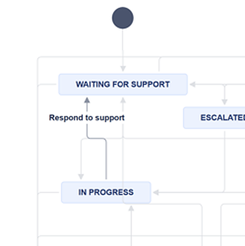
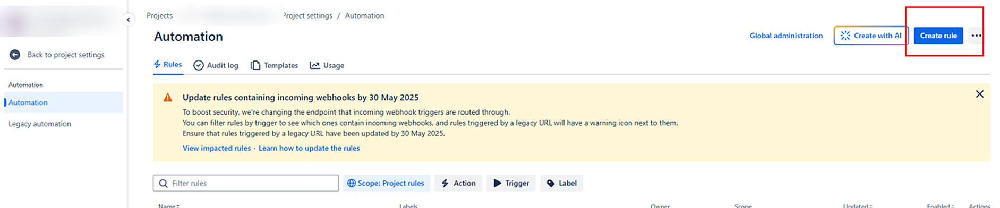
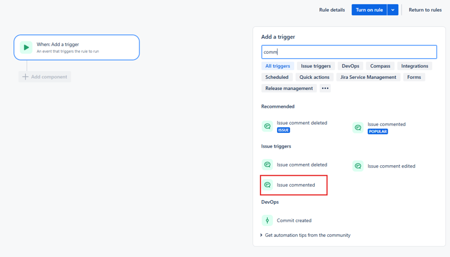
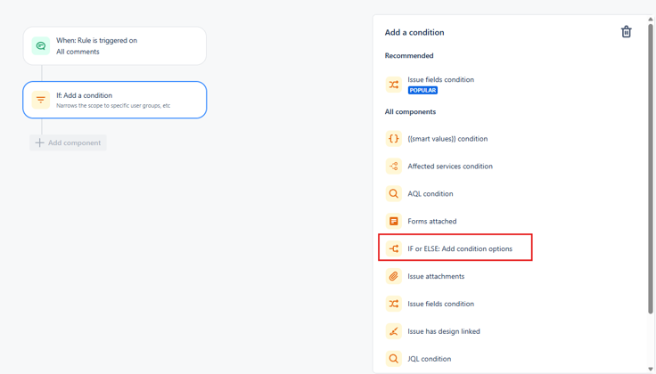
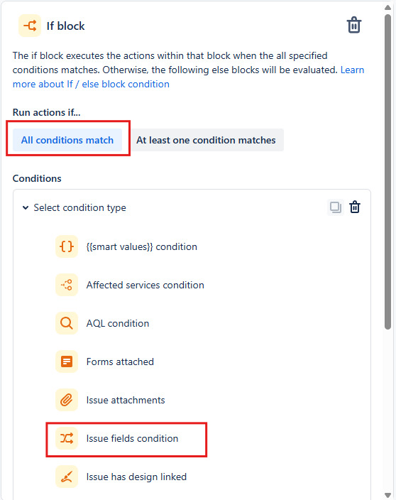
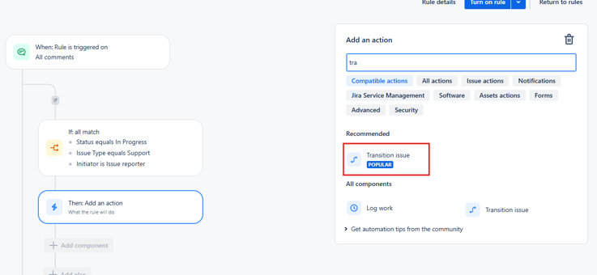
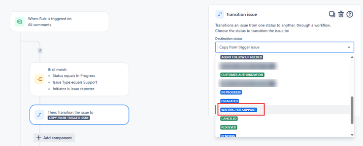
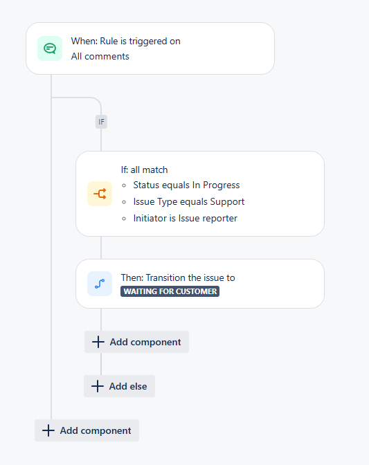

On high-traffic service projects, agents couldn't easily tell which tickets had a new reply from the customer. This rule moves the ticket back to Waiting for Support the moment the customer comments, so the queue shows what needs attention.
Goals
- When the customer comments, the status becomes Waiting for Support.
- Only when the current status is In Progress (not Open or Pending).
- Only for the Support issue type.
Steps
- Check the workflow has a transition from In Progress to Waiting for Support.

Workflow transition In Progress → Waiting for Support - Go to Project settings → Automation → Create rule.

Create rule - For the When trigger, choose Issue commented.

Trigger: Issue commented - Add a condition and choose IF or ELSE: Add condition options.

IF / ELSE block - Keep All conditions match and add an Issue fields condition.

All conditions match → Issue fields condition - Add three conditions:
- Status equals In Progress (Field = Status, Condition = Equals, Value = In Progress)
- Issue Type equals Support (Field = Issue Type, Condition = Equals, Value = Support)
- User condition: User who triggered the event is Issue Reporter. The customer is the reporter, so this means “the customer commented”.
- For Then, add the action Transition issue.

Action: Transition issue - Set the destination status to Waiting for Support.

Destination status - Name the rule and turn it on. The finished rule looks like this:

The finished rule